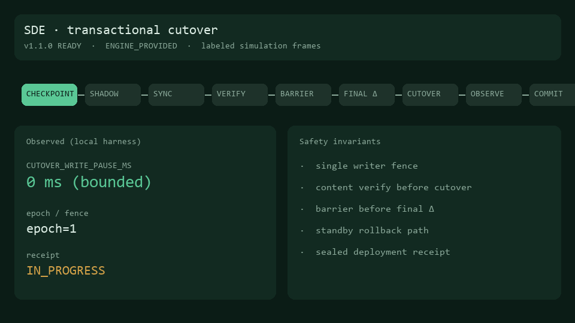
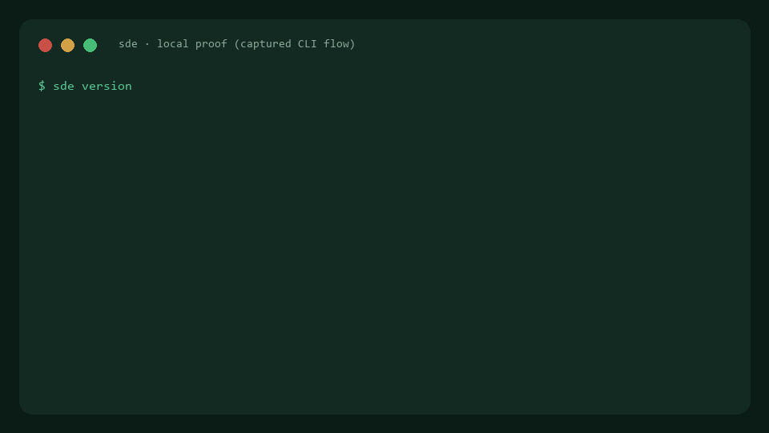

See it run


Measured local cutover: barrier ~16 ms · write pause ~15 ms · 129 mutations. Proof pack →
A general-purpose state lifecycle engine: mutation journals, bounded cutover, portable State Archives, fire drills, and verified recovery — for arbitrary volume-backed workloads, not only databases.


Measured local cutover: barrier ~16 ms · write pause ~15 ms · 129 mutations. Proof pack →
One command builds, tests, migrates, restores, and writes receipts.
.\evaluate.ps1
# or: bash ./evaluate.shCLI · LIBRARY · CONTROL-PLANE modes. Versioned events for platform integration.
Repository ·
docs in-tree under docs/
ACTIVE ──checkpoint──▶ SHADOW
│ │
journal ◀────────── continuous replay
│ │
└── barrier → final Δ → verify → cutover → observe → COMMIT
│
ENGINE_PROVIDED PSA → escrow / clone / fire-drill